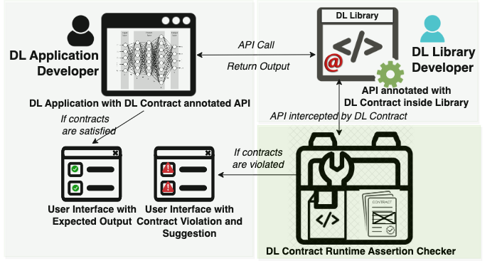
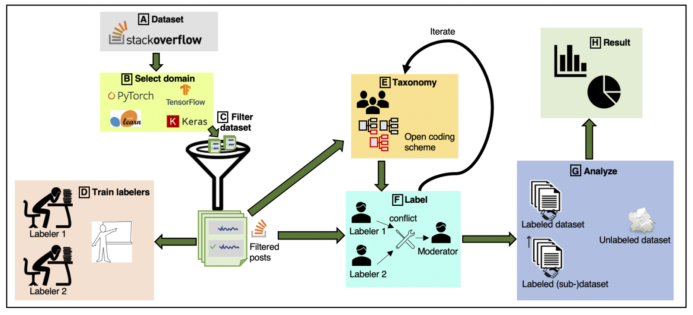

Shibbir Ahmed is currently an Assistant Professor in the Department of Computer Science at Texas State University. He received his Ph.D in 2024 from Iowa State University under the supervision of Professor Dr. Hridesh Rajan.
His research spans the intersection of Software Engineering, Artificial Intelligence, and Data Science. He is particularly working on Software Engineering for trustworthy Machine Learning. Recently, he has worked on ensuring the reliability of Deep Learning software by specifying and checking contracts on deep learning APIs. He proposed design by contracts for deep learning APIs. Recently, he has developed an innovative method for inferring preconditions from deep learning models and utilized them to determine the trustworthiness of its prediction during deployment. He has collaborated on various research projects, resulting in publications at peer-reviewed conferences and journals, including ICSE and ESEC/FSE, EMSE, and TDS, with support from the US National Science Foundation. Furthermore, he has served as an external and sub-reviewer for the conferences, MSR'2024 ASE'2024 and ICSE'2024.
Shibbir Ahmed , Hongyang Gao, and Hridesh Rajan, "Inferring Data Preconditions from Deep Learning Models for Trustworthy Prediction in Deployment,"
In Proceedings of the
46th International Conference on Software Engineering, April, 2024,
(ICSE 2024),
Lisbon, Portugal.
[PDF]
[Code]
Shibbir Ahmed , Sayem Mohammad Imtiaz, Breno Dantas Cruz, Samantha Syeda Khairunnesa, and Hridesh Rajan, "Design by Contract for Deep Learning APIs,"
In Proceedings of the
ACM Joint European Software Engineering Conference and Symposium on the Foundations of Software Engineering, December, 2023,
(ESEC/FSE 2023),
San Francisco, CA, USA.
[PDF]
[Presentation]
[Code]
Samantha Syeda Khairunnesa, Shibbir Ahmed , Sayem Mohammad Imtiaz, Hridesh Rajan, and Gary Leavens
"What Contracts Do ML APIs Need? An Empirical Study,"
Empirical Software Engineering Journal,
(EMSE 2023),
28(6), pp.142.
Springer, 2023.
[PDF]
Shibbir Ahmed, Md Johirul Islam, and Hridesh Rajan,
"Semantics and Anomaly Preserving Sampling Strategy for Large-Scale Time Series Data,"
ACM/IMS Transactions on Data Science
(TDS 2022)
, Volume 2 issue 4, Article 41, pp. 1-25, ACM, 2022.
[PDF]
[Code]
Shibbir Ahmed
"Towards Deep Learning Specification,"
In Proceedings of the
ACM SIGPLAN conference on Systems, Programming, Languages, and Applications: Software for Humanity (SPLASH), Doctoral Symposium,
ACM, October, 2021.
[PDF]
Deep learning models are trained with certain assumptions about the data during the development stage and then used for prediction in the deployment stage. It is important to reason about the trustworthiness of the model’s predictions with unseen data during deployment. Existing methods for specifying and verifying traditional software are insufficient for this task, as they cannot handle the complexity of DNN model architecture and expected outcomes. In this work, we propose a novel technique that uses rules derived from neural network computations to infer data preconditions for a DNN model to determine the trustworthiness of its predictions. Our approach, DeepInfer involves introducing a novel abstraction for a trained DNN model that enables weakest precondition reasoning using Dijkstra’s Predicate Transformer Semantics. By deriving rules over the inductive type of neural network abstract representation, we can overcome the matrix dimensionality issues that arise from the backward non-linear computation from the output layer to the input layer. We utilize the weakest precondition computation using rules of each kind of activation function to compute layer-wise precondition from the given postcondition on the final output of a deep neural network. We extensively evaluated DeepInfer on 29 real-world DNN models using four different datasets collected from five different sources and demonstrated the utility, effectiveness, and performance improvement over closely related work. DeepInfer efficiently detects correct and incorrect predictions of high-accuracy models with high recall (0.98) and high F-1 score (0.84) and has significantly improved over the prior technique, SelfChecker. The average runtime overhead of DeepInfer is low, 0.22 sec for all the unseen datasets. We also compared runtime overhead using the same hardware settings and found that DeepInfer is 3.27 times faster than SelfChecker, the state-of-the-art in this area.
Publication:
ICSE-2024
Deep Learning (DL) techniques are increasingly being incorporated in critical software systems today. DL software is buggy too. Recent work in SE has characterized these bugs, studied fix patterns, and proposed detection and localization strategies. In this work, we introduce a preventative measure. We propose design by contract for DL libraries, DL Contract for short, to document the properties of DL libraries and provide developers with a mechanism to identify bugs during development. While DL Contract builds on the traditional design by contract techniques, we need to address unique challenges. In particular, we need to document properties of the training process that are not visible at the functional interface of the DL libraries. To solve these problems, we have introduced mechanisms that allow developers to specify properties of the model architecture, data, and training process. We have designed and implemented DL Contract for Python-based DL libraries and used it to document the properties of Keras, a well-known DL library. We evaluate DL Contract in terms of effectiveness, runtime overhead, and usability. To evaluate the utility of DL Contract, we have developed 15 sample contracts specifically for training problems and structural bugs. We have adopted four well-vetted benchmarks from prior works on DL bug detection and repair. For the effectiveness, DL Contract correctly detects 259 bugs in 272 real-world buggy programs, from well-vetted benchmarks provided in prior work on DL bug detection and repair. We found that the DL Contract overhead is fairly minimal for the used benchmarks. Lastly, to evaluate the usability, we conducted a survey of twenty participants who have used DL Contract to find and fix bugs. The results reveal that DL Contract can be very helpful to DL application developers when debugging their code.

Publication: ESEC/FSE 2023
Recent work has shown that Machine Learning (ML) programs are error-prone and called for contracts for ML code. Contracts, as in the design by contract methodology, help document APIs and aid API users in writing correct code. The question is: what kinds of contracts would provide the most help to API users? We are especially interested in what kinds of contracts help API users catch errors at earlier stages in the ML pipeline. We describe an empirical study of posts on Stack Overflow of the four most often-discussed ML libraries: TensorFlow , Scikit-learn, Keras, and PyTorch. For these libraries, our study extracted 413 informal (English) API specifications. We used these specifications to understand the following questions. What are the root causes and effects behind ML contract violations? Are there common patterns of ML contract violations? When does understanding ML contracts require an advanced level of ML software expertise? Could checking contracts at the API level help detect the violations in early ML pipeline stages? Our key findings are that the most commonly needed contracts for ML APIs are either checking constraints on single arguments of an API or on the order of API calls. The software engineering community could employ existing contract mining approaches to mine these contracts to promote an increased understanding of ML APIs. We also noted a need to combine behavioral and temporal contract mining approaches. We report on categories of required ML contracts, which may help designers of contract languages.

Publication: EMSE-2023 ESEC/FSE Journal First Track-2023
We propose PASS, a O(n) algorithm for data reduction that is specifically aimed at preserving the semantics of time series data visualization in the form of line chart. Visualization of large trend line data is a challenge and current sampling approaches do produce reduction but result in loss of semantics and anomalous behavior. We have evaluated PASS using 7 large and well-vetted datasets (Taxi, Temperature, DEBS challenge 2012-2014 dataset, New York Stock Exchange data, and Integrated Surface Data) and found that it has several benefits when compared to existing state-of-the-art time series data reduction techniques. First, it can preserve the semantics of the trend. Second, the visualization quality using the reduced data from PASS is very close to the original visualization. Third, the anomalous behavior is preserved and can be well observed from the visualizations created using the reduced data. We have conducted two user surveys collecting 3000+ users’ responses for visual preference as well as perceptual effectiveness and found that the users prefer PASS over other techniques for different datasets. We also compare PASS using visualization metrics where it outperforms other techniques in 5 out of the 7 datasets.
Publication:
TDS
2022